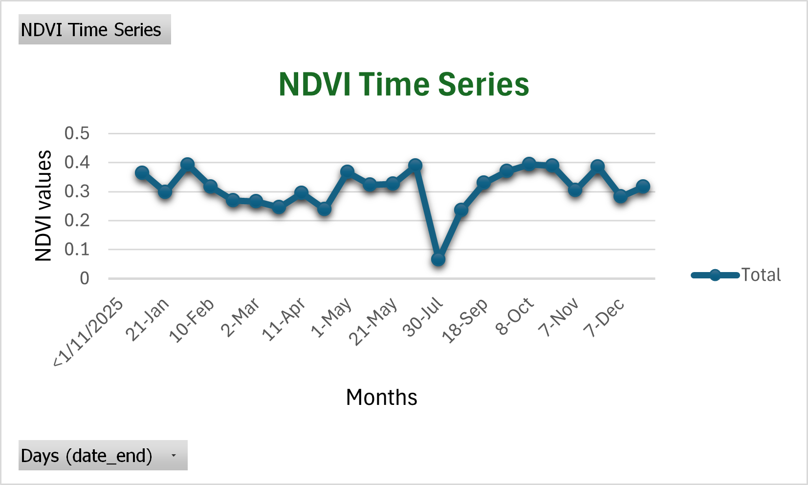
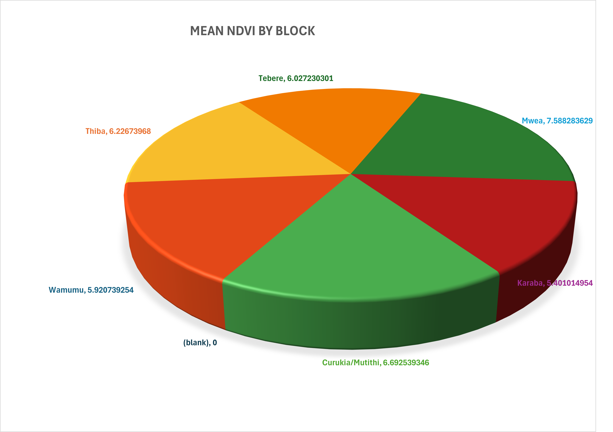
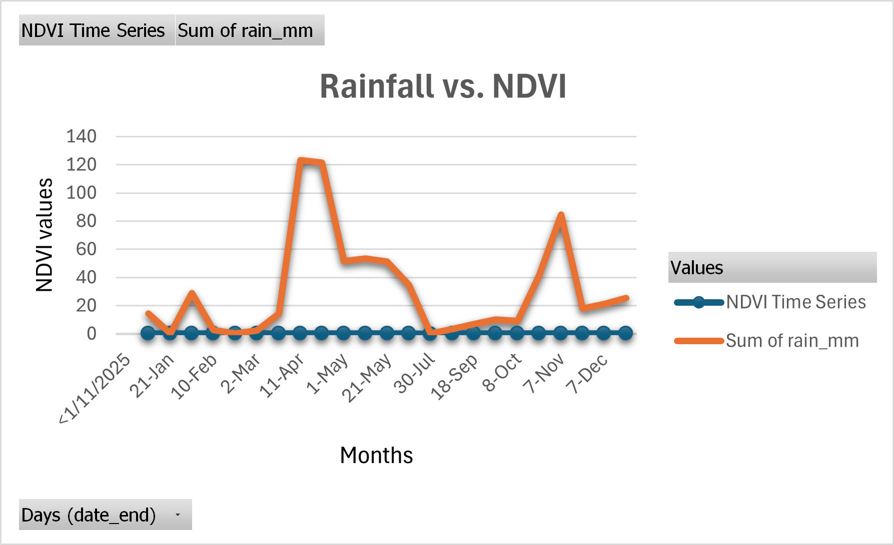
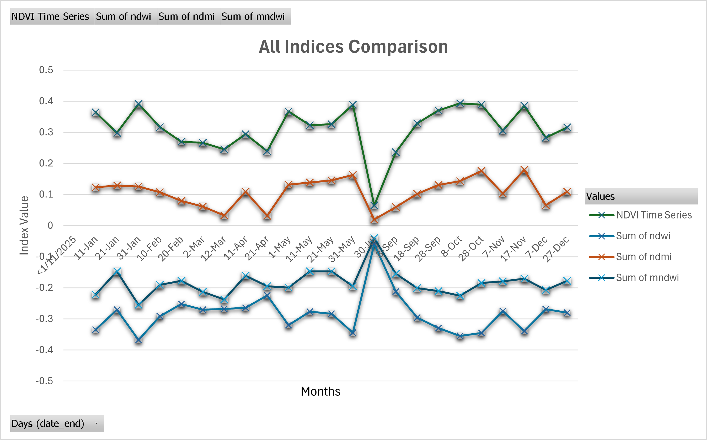
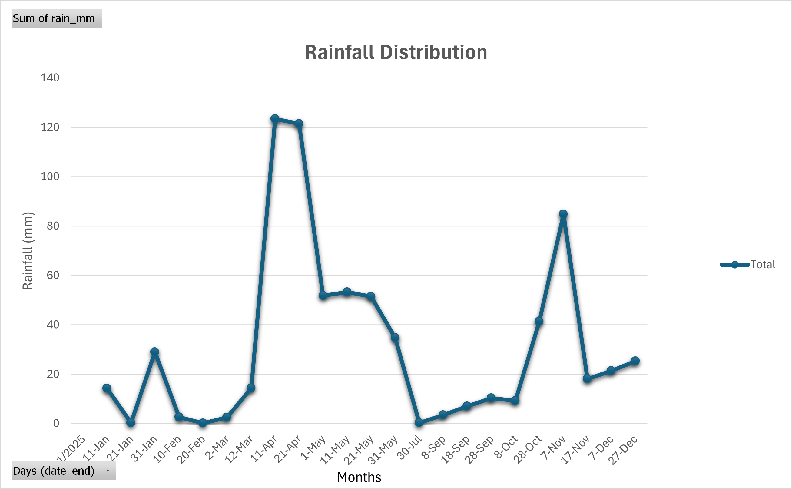

Rice Crop Health Monitoring in Mwea Irrigation Scheme Using Sentinel-2 NDVI (2025)
Using Sentinel-2 imagery and 489+ plot-level NDVI data points across 12 months, this project identifies stress-prone rice blocks in the Mwea Irrigation Scheme – enabling targeted interventions for Kenya’s most productive rice region.
Objectives
- Monitor crop health across all rice blocks using satellite data
- Identify stress-prone areas for targeted intervention
- Analyze seasonal crop growth patterns
- Support data-driven agricultural decision-making
Study Area
Mwea Irrigation Scheme, Kirinyaga County – covering approximately 26,000 acres, supporting over 7,500 farming households across five major sections.

Methodology
Data Sources
- Sentinel-2 imagery (10m resolution, 5-day revisit)
- 12 monthly cloud-free composites (Jan–Dec 2025)
- Manually digitized 489+ individual rice plots from google satellite in Arcgis Pro
Indices Used
| Index | Formula | Purpose |
|---|---|---|
| NDVI | (NIR – Red) / (NIR + Red) | Crop health monitoring |
| NDWI | (Green – NIR) / (Green + NIR) | Vegetation water content |
| NDMI | (NIR – SWIR) / (NIR + SWIR) | Moisture stress detection |
| MNDWI | (Green – SWIR) / (Green + SWIR) | Flooded field mapping |
Tools
- Google Earth Engine – image processing & index computation
- Arcgis pro - Digitizing the rice plots
- QGIS for map making
- Excel
Preprocessing
- Cloud masking using QA60 band
- Extracted mean index values per plot per month
- Total dataset: 90,000+ observations per index
Analysis
- Computed monthly NDVI, NDWI, NDMI, MNDWI for each plot
- Aggregated results by irrigation blocks
- Compared NDVI trends with rainfall patterns
- Identified crop growth stages (planting → peak → harvest)
- Ranked blocks based on average NDVI
Results & Findings
Seasonal Patterns
- Peak NDVI in April–May (long rains)
- Second peak in October–November (short rains)
- Low NDVI during dry season (June–September)

Crop Health Ranking
| Block | Scaled NDVI | Status |
|---|---|---|
| Mwea | 7.59 | Healthiest – optimal conditions |
| Cunkia/Mutithi | 6.69 | Moderately good |
| Thiba | 6.23 | Moderately good |
| Wamumu | 5.92 | Stressed – priority intervention |
| Karaba | 5.40 | Most stressed – critical priority |
Key Insights
- Strong correlation between NDVI and moisture indices
- Water availability is the main driver of crop performance
- Clear spatial variation in crop health across blocks
Conclusion & Recommendations
The analysis reveals strong spatial disparities in crop health across the Mwea Irrigation Scheme. While Mwea block shows optimal performance, Karaba and Wamumu consistently exhibit stress, likely due to water limitations or soil conditions.
Limitations
- No ground-truth validation data
- NDVI saturation at high biomass levels
- Monthly composites may miss short-term stress events
Recommendations
- Prioritize intervention in Karaba and Wamumu blocks
- Implement real-time satellite monitoring (5-day updates)
- Train extension officers to use NDVI-based decision tools
Maps & Visual Outputs




